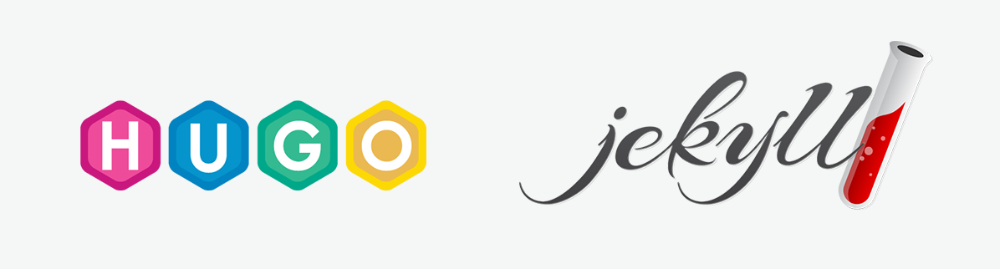

오래 전에는 잘하는 개발자가 되려면 기술 블로그 하나정도는 해야한다는 생각을 했었다. 그래서 만들어야지 생각만 하다가 취업을 앞두고 jekyll을 이용해서 만들었지만 막상 만들고 나서는 포스팅 할게 없어서 방치해 두었던 기억이 있다. 취업을 하게된 지금에서야 포스팅 하고 싶은게 생겨서 다시 처음부터 블로그를 만들어 봤다.
Hugo를 선택한 이유
 사실 jekyll이 사용자도 가장 많고, 그만큼 테마도 많은 것으로 알고 있다. 그래서 저번에 블로그를 만들 때도 jekyll을 이용해서 만들었는데, Ruby로 만들어져 있다 보니 Ruby에 대한 이해가 부족한 나로서는 제대로 이해하지 못하고 가이드를 따라가기만 해야했다. 반면에 Hugo는 요즘 업무에서도 사용하고 있는 Go로 만들어져 있기 때문에 좀 더 이해하기 편할 것이라고 생각했다. 그 외에도 차이점이 더 있을까 해서 찾아보았다.
- 빠르다 기본적으로 jekyll에 비해서 빌드가 빠르고, 페이지 수가 늘어날 수록 그 차이는 더 커진다고 한다.
- 설치가 간편하다 Windows를 포함한 대부분의 운영체제를 공식적으로 지원하고 있기 때문에 공식 문서만 따라간다면 간편하게 블로그를 바로 띄울 수 있다.
- 테마 커스터마이징이 쉽다
단점도 몇가지 있었는데,
- github가 공식으로 지원하고 있는 jekyll과는 다르게 github 연동 시 native로 연동이 되지 않기 때문에 따로 관리해야한다.
- jekyll에서는 외부 plugin으로 해결가능하던 것들을 hugo에서는 직접 해야할 수도 있다.
사전 정보는 이정도면 충분한 것 같고, 이제 직접 만들어 보자.
Quick Start
공식 가이드는 여기
설치 환경은 Windows + Ubuntu이다. Ubuntu 환경에서 설치하려면 다른 환경에 비해 좀 더 복잡한 것 같다. Windows 자체나 다른 환경에서 설치하실 분들은 공식 가이드를 참고하시면 된다.
Unbuntu에서 설치할 때 주로 사용하는 것처럼 sudo apt-get install hugo 명령어로도 hugo를 설치할 수 있지만 낮은 버전밖에 없어서 테마 호환같은게 잘 안될 것이다. 그래서 나는 직접 수동으로 설치했다.
1. 휴고 설치
$ sudo uname -i
$ wget https://github.com/gohugoio/hugo/releases/download/v0.70.0/hugo_0.70.0_Linux-64bit.deb
$ sudo dpkg -i hugo_0.70.0_Linux-64bit.deb
$ sudo hugo version
Hugo Static Site Generator v0.70.0-7F47B99E linux/amd64 BuildDate: 2020-05-06T11:18:50Z
위에서 부터 차례로 실행하면 된다. sudo uname -i 명령어로 리눅스 시스템 정보를 확인할 수 있는데, 여기서 X86_64가 나왔다면 그대로 실행하면 되고, 다른 시스템이면 여기서 찾아서 다른 버전을 설치해야한다.
.deb 파일을 받았으면 dpkg로 패키지를 설치하고, hugo 명령어로 설치 확인을 하면된다. 마지막 줄처럼 출력되면 성공적으로 설치가 된 것이다.
설치를 완료했으면 간단한 블로그를 띄워보자.
2. 사이트 생성
$ hugo new site quickstart
정상적으로 생성되었다면 quickstart라는 이름의 디렉토리가 생성되었을 것이다.
3. 테마 추가
$ cd quickstart
$ git init
$ git submodule add https://github.com/budparr/gohugo-theme-ananke.git themes/ananke
여기서는 ananke라는 테마를 설치했는데 다른 테마들은 여기서 확인 할 수 있다.
$ echo 'theme = "ananke"' >> config.toml
설치한 테마는 config.toml에 테마 설정을 해주면 된다.
4. 포스트 추가
$ hugo new posts/my-first-post.md
위 명령어로 포스트를 생성할 수 있다. quickstart/content/posts/my-first-post.md 파일이 생성된다. 생성된 포스트는 <baseURL>/posts/my-first-post의 주소를 가지게 된다. 처음 생성하면 이 포스트의 메타데이터만 가지고 있는데, archetypes/default.md 파일에서 기본 생성 메타데이터를 설정할 수 있다.
5. 서버 시작
$ hugo server -D
로컬에서 서버를 띄울 수 있다. 서버가 띄우는데 성공하면 localhost:1313에서 확인할 수 있다. 앞서 만들었던 포스트가 보일 것이다.

-D 옵션은 포스트 메타데이터에서 draft = true로 해놓은 포스트들도 나올 수 있게 설정하는 것이다. 보통 작성 중인 포스트를 draft = true로 해놓고, 작성 완료되면 이 설정을 지우면 된다.
여기까지 하면 간단한 블로그를 로컬에서 띄울 수 있을 것이다. 이제부터 깃허브와 연동해서 외부에서 접속할 수 있도록 해보자.
Host on Github
공식 가이드는 여기
깃허브와 연동하려면 두개의 레포지토리가 필요하다. 하나는 소스 파일을 넣고, 다른 하나에 빌드한 파일을 넣는다. 아래 순서대로 하면 된다.
1. 레포지토리 생성
<YOUR-PROJECT>이름의 레포지토리 생성<USERNAME>.github.io이름의 레포지토리 생성
<YOUR-PROJECT>는 아무 이름이나 사용해도 되지만 두번째 레포지토리는 정확히 저렇게 생성해야 깃허브로 렌더링을 할 수 있다. <USERNAME>에는 깃허브 아이디를 쓰면 된다. 레포지토리 생성 시 README.md파일을 생성할지 여부를 묻는 칸이 있는데 깃에 익숙하지 않다면 첫번째 레포지토리는 생성 안함, 두번째 레포지토리는 생성하는 것이 아래 진행하는데 편할 것이다.
2. 레포지토리 연결
$ git init
$ git remote add origin http://github.com/<USERNAME>/<YOUR-PROJECT>
$ rm -rf public
$ git submodule add -b master https://github.com/<USERNAME>/<USERNAME>.github.io.git public
앞에서 만든 hugo 프로젝트 안에서 위의 명령어를 실행해서 프로젝트 디렉토리와 깃허브 리모트를 연결한다. hugo를 빌드하면 public 디렉토리가 생기는데 두번째 레포지토리와 public을 연결하기 전에 먼저 존재하는 public 디렉토리를 지우고 연결한다.
3. 스크립트 실행
위 순서까지 잘 진행했다면 공식 가이드에 있는 스크립트를 만들어서 실행하자. 별로 복잡한 작업은 아니지만 매번 수동으로하려면 귀찮은데 스크립트를 만들어 놓으면 편하다.
#!/bin/sh
# If a command fails then the deploy stops
set -e
printf "\033[0;32mDeploying updates to GitHub...\033[0m\n"
# Build the project.
hugo # if using a theme, replace with `hugo -t <YOURTHEME>`
# Go To Public folder
cd public
# Add changes to git.
git add .
# Commit changes.
msg="rebuilding site $(date)"
if [ -n "$*" ]; then
msg="$*"
fi
git commit -m "$msg"
# Push source and build repos.
git push origin master
2.에서 명령어를 실행했던 프로젝트 디렉토리에서 위의 스크립트를 실행하면 된다.
4. 접속 하기
이제 외부에서 접근할 수 있는 블로그가 만들어졌을 것이다. https://<USERNAME>.github.io에서 연결되는지 확인해 보자.
여기까지 했으면 기본적인 글쓰기를 할 수 있을 것이다. 하지만 기본 테마를 그냥 쓰기에는 좀 밋밋할 수 있다. 다음 포스팅에서 테마 커스터마이징 하는 간단한 방법을 알아보자.